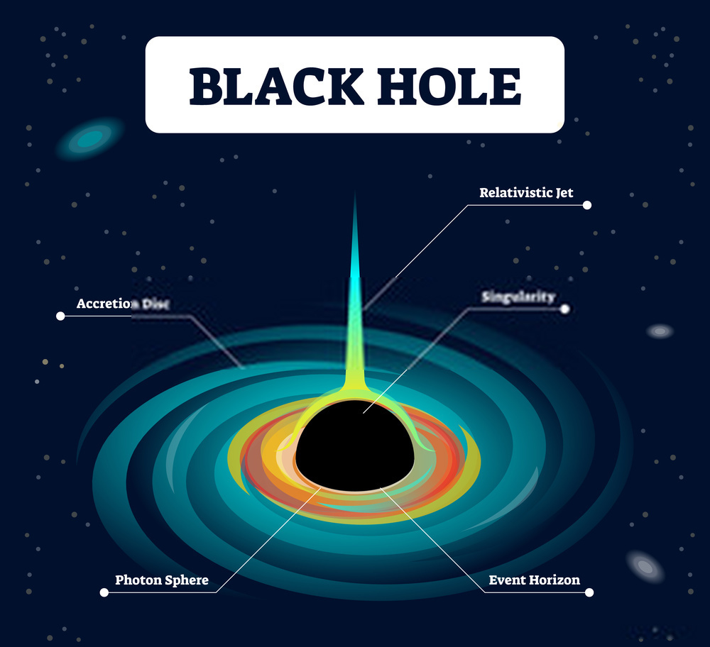

BLACK HOLES ARE points in space that are so dense they create deep gravity sinks. Beyond a certain region,
not even light can escape the powerful tug of a black hole's
gravity.
Formation
Black holes only form under certain conditions. Most black holes form when the center of
a very big star collapses in on itself. When this happens, it causes a phenomenon called
a Supernova, which is when an exploding star blasts a part of it into space.
Of Course, there are several other ways in which these bizarre interstellar bodies are
formed. One of which are Gravitational Collapse, which means when an objects internal
pressure is insufficient to resist the objects own gravity. This happens when a star has
burnt out all it's hydrogen and helium and cannot maintain it's temperature. This is
what causes a supernova.
Another way in which black holes form is High-Energy Collisions. While taking into
account that no such events have been detected, in theory, in such an event where a
large interstellar body collides with another, should the collision achieve a sufficient
density, a black hole would form. Such
Micro Black Holes may have been created at the Large Hadron Collider (LHC) but they
would evaporate in 10^-25 seconds due to they're size and Hawking Radiation.
Once a Black hole has been formed, It can keep growing by absorbing additional matter.
Black holes are so dense that they're gravity can dwarf the gravity of regular stars.
The mass of the black hole is concentrated to a single point in space time, called a
singularity. It is considered to be 0-dimensional and the very center of the black hole.
Learn more about these in Structure.
Types
There are around 4 known types of Black Holes:
Stellar: These Black holes are small, but deadly. They may be small, but don't
let that deceive you. Black holes can pack around 3 times the mass of the sun
into the diameter of a city. These are the black holes which are formed after
the gravitational collapse of large stars. The immense density of the black
hole causes a significant amount of gravitational pull. According to the
Harvard-Smithsonian Center for Astrophysics, the Milky Way contains around a
few hundred million stellar black holes.
Supermassive: These Black holes may be the diameter of the sun, but again,
don't let that deceive you. But their mass can be millions or even billions the
mass of the sun. Scientists aren't exactly sure on how these super giants spawn
but they have some theories. It could be Large Gas Clouds, collapsing together.
It may also be the result of hundreds or thousands of black holes that merge
together. It could be a stellar cluster all collapsing together or they could
have arisen from dark matter, however the properties of it are unknown as it
does not emit light and cannot be directly observed.
Intermediate: These black holes come of intermediate size, and can eventually
form a supermassive black hole. They are theorized to exist in the centers of
dwarf (very small) galaxies.
Miniature: The concept that black holes exist smaller than stellar mass was
introduced by Stephen Hawking in 1971. These black holes are also called
quantum mechanical black holes or mini black holes. They are thought to be
formed by high-energy or light-speed collisions.
Structure
Singularity: The region of the black hole where all it's mass has
been compressed down to a single point in space time. Due to this,
it has almost an infinite density and creates immense gravitational
force.
Event Horizon: This is what scientists call,
"The Point of No
Return"
. Any object, as well as light cannot escape the immense
gravitational pull of the black holes.
Photon Sphere: This is the location near a black hole where gravity
is so strong, that light travels in circles. Photons orbit the black
hole at this distance.
Acceleration Disc: This is a disc made of stellar, or planetary
matter that spirals towards the black hole.
The Ergosphere: If the black hole rotates, then it's mass causes
space time around it to rotate as well. This region is known as the
Ergosphere. Spaghettification generally begins here.
Relativistic Jets: For Large Black holes, high intensity magnetic
fields are emitted perpendicular to the acceleration disc. This
causes a jet of charged particles to circle them and creates jets of
gas.